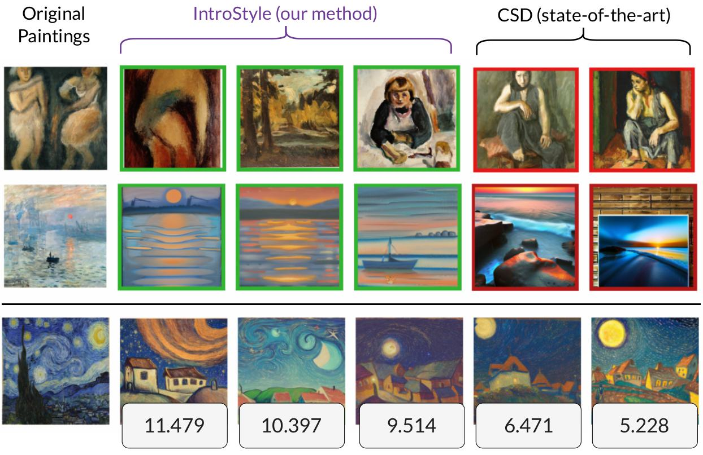
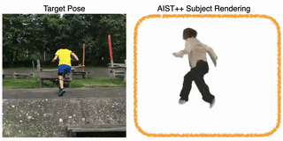
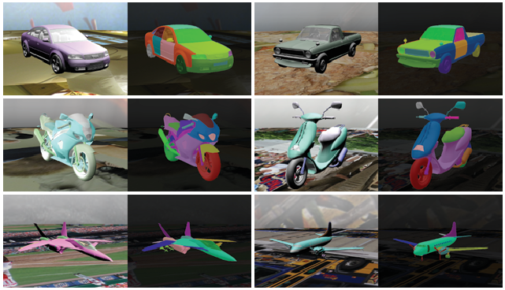

- [2025.02] EditAR accepted to CVPR 2025.
- [2022.03] CoordGAN accepted to CVPR 2022.
- [2021.07] A-SDF accepted to ICCV 2021.
My research centers on controllable generation for both 2D and 3D content creation. I am also broadly interested in the intersection of computer vision, machine learning, robotics.
* indicates equal contributions.
|

|
IntroStyle: Training-Free Introspective Style Attribution using Diffusion Features
Anand Kumar,
Jiteng Mu,
Nuno Vasconcelos
ICCV, 2025
|

|
EditAR: Unified Conditional Generation with Autoregressive Models
Jiteng Mu,
Nuno Vasconcelos,
Xiaolong Wang
CVPR, 2025
|

|
Learning Generalizable Feature Fields for Mobile Manipulation
Ri-Zhao Qiu*,
Yafei Hu*,
Yuchen Song*,
Ge Yang,
Yang Fu,
Jianglong Ye,
Jiteng Mu,
Ruihan Yang,
Nikolay Atanasov,
Sebastian Scherer,
Xiaolong Wang
IROS, 2025
|

|
Editable Image Elements for Controllable Synthesis
Jiteng Mu,
Michaël Gharbi,
Richard Zhang,
Eli Shechtman,
Nuno Vasconcelos,
Xiaolong Wang,
Taesung Park
ECCV, 2024
|
|

|
ActorsNeRF: Animatable Few-shot Human Rendering with Generalizable NeRFs
Jiteng Mu,
Shen Sang,
Nuno Vasconcelos,
Xiaolong Wang
ICCV, 2023
|

|
CoordGAN: Self-Supervised Dense Correspondences Emerge from GANs
Jiteng Mu,
Shalini De Mello,
Zhiding Yu,
Nuno Vasconcelos,
Xiaolong Wang,
Jan Kautz,
Sifei Liu
CVPR, 2022
|
|

|
Learning Part Segmentation through Unsupervised Domain Adaptation from Synthetic Vehicles
Qing Liu,
Adam Kortylewski,
Zhishuai Zhang,
Zizhang Li,
Mengqi Guo,
Qihao Liu,
Xiaoding Yuan,
Jiteng Mu,
Weichao Qiu,
Alan Yuille
CVPR, 2022,
oral
|
|

{kind=link}